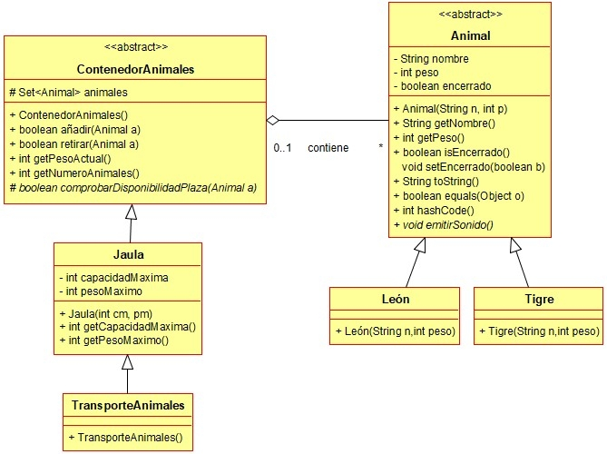

Ejercicio 23 : Consulta el diagrama de clases Animales y programa en un paquete llamado daw.zoo las clases Animal, Tigre y León.

-
Animal: Es un animal que tiene un nombre, un peso y puede estar o no encerrado en un contenedor de animales.
-
Haz que el método setEncerrado tenga modificador de acceso por defecto.
-
Sobreescribe los métodos hereados de la clase Object de esta forma:
-
toString: Muestra el nombre del animal y su peso.
-
equals y hashCode: Se considera que un animal coincide con otro si ambos son objetos de la misma clase y además coincide su nombre de animal. Usa el IDE para programar estos métodos.
-
emitirSonido: Método abstracto que muestra por pantalla un mensaje con el sonido del animal.
-
León y Tigre: clases que heredan de Animal y sobreescriben “emitirSonido”.